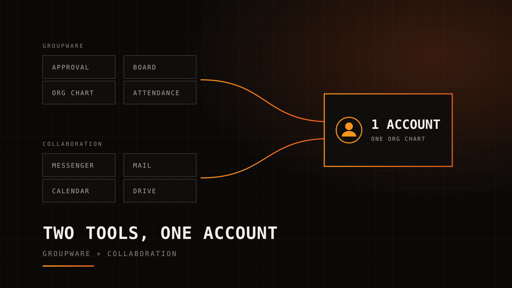
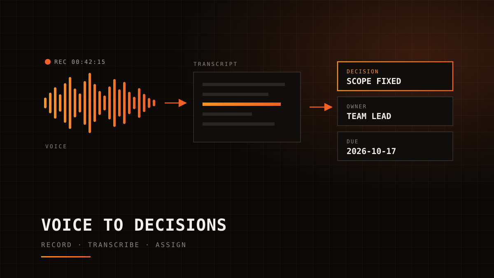
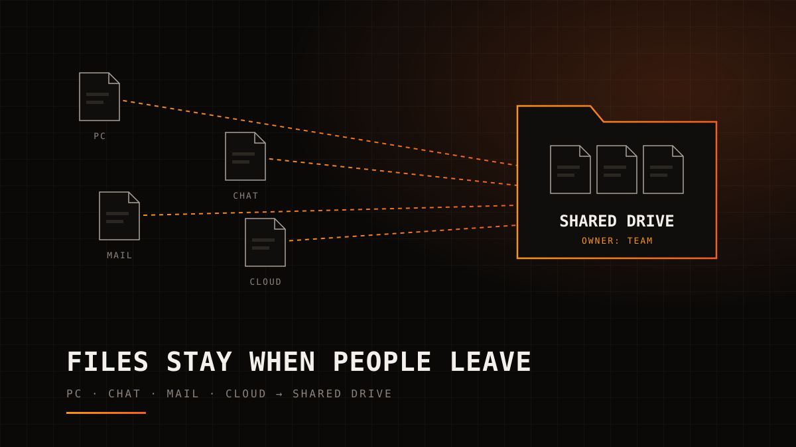
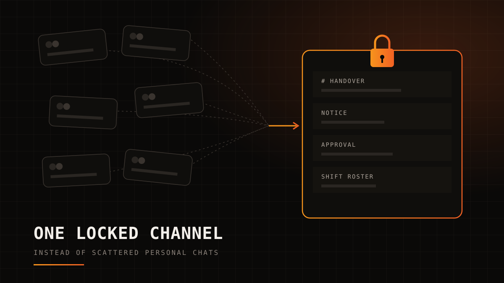

HOME / 그룹웨어와 협업툴 비교

INSIGHT · GROUPWARE
그룹웨어와 협업툴, 무엇이 다르고 무엇을 기준으로 고르나
그룹웨어는 결재·게시판·조직도·근태 같은 경영지원을, 협업툴은 메신저·메일·캘린더·드라이브 같은 소통을 맡습니다. 둘을 따로 들이면 로그인, 입력, 조직도, 알림이 모두 두 벌이 됩니다. 이 글은 두 도구의 차이와 고를 때 확인할 점검표, 도입 순서를 정리합니다.
§01
한 줄로 구분하면
⚠ 검토용 초안 · 담당 부서 사실 검수 전 (2026-10-08 작성)
두 이름은 섞여 쓰이지만 출발점이 다릅니다.
- 그룹웨어: 전자결재, 게시판, 조직도, 근태, 회의실·차량 같은 자원 예약처럼 회사 안의 절차를 처리하는 경영지원 도구입니다.
- 협업툴: 메신저, 메일, 캘린더, 드라이브처럼 사람 사이의 소통과 자료 공유를 처리하는 도구입니다.
실제 제품에서는 경계가 흐립니다. 메일과 캘린더는 그룹웨어에 들어 있는 경우도 많고, 협업툴이 결재를 붙이기도 합니다.
그룹웨어는 "누가 언제 승인했나"에 답합니다. 협업툴은 "누가 무엇을 말하고 공유했나"에 답합니다.
| 구분 | 그룹웨어 | 협업툴 |
|---|---|---|
| 출발한 업무 | 결재, 게시판, 조직도, 근태, 자원 예약 | 메신저, 드라이브 |
| 양쪽에 겹치는 것 | 메일, 캘린더 | 메일, 캘린더 |
| 답하는 질문 | 누가 언제 승인했나 | 누가 무엇을 말하고 공유했나 |
| 남는 기록 | 승인 이력, 공지, 근태 기록 | 대화, 파일, 일정 |
| 여는 빈도 | 결재·공지가 생길 때 | 하루에도 여러 번 |
두 영역을 한 제품에 담거나, 서로 연동해서 쓰는 방식도 있습니다. 그래서 이름보다 "결재와 소통이 한 계정 안에서 이어지는가"를 먼저 보는 편이 정확합니다.
§02
따로 놀면 생기는 일
그룹웨어와 협업툴을 서로 다른 시기에 따로 들이면 계정과 조직도가 둘로 갈립니다. 현장에서는 이런 일로 나타납니다.
- 로그인 두 번: 계정과 비밀번호가 둘이라, 잊어버리면 초기화도 두 곳에서 해야 합니다.
- 같은 내용 두 번 입력: 메신저로 합의한 내용을 결재 문서에 다시 적고, 결재 결과를 메신저로 다시 알립니다.
- 조직도 불일치: 인사 발령이 그룹웨어에는 반영됐는데 메신저 조직도에는 옛 부서가 남아 있습니다.
- 퇴사자 계정 회수 누락: 한 시스템만 잠그고 다른 시스템 계정을 놓치면, 퇴사자가 대화방과 공유 파일에 계속 들어올 수 있습니다.
- 흩어진 알림: 결재 알림은 그룹웨어 안에, 업무 요청은 메신저에, 일정은 메일에 옵니다.
다섯 가지 모두 도구 하나의 결함이 아닙니다. 두 도구 사이의 틈에서 생깁니다. 그래서 기능 목록을 비교하기 전에 두 영역이 어떻게 이어지는지를 먼저 봐야 합니다.
§03
고르는 기준: 점검표 8가지
제품을 비교할 때 아래 질문에 "예"라고 답할 수 있는지 확인하십시오.
| 점검 항목 | 확인할 질문 | 놓치면 생기는 일 |
|---|---|---|
| 1. 계정 하나 | 메신저·메일·결재·드라이브를 한 계정으로 쓰는가 | 비밀번호와 퇴사 처리가 시스템 수만큼 늘어난다 |
| 2. 조직도 자동 반영 | 인사 발령을 한 곳에서 바꾸면 결재선과 메신저 조직도가 함께 바뀌는가 | 결재가 이미 자리를 옮긴 사람에게 간다 |
| 3. PC와 모바일 | 모바일에서도 결재, 첨부 확인, 조직도 검색이 PC와 같게 되는가 | 외근·현장 인력의 결재가 사무실 복귀 때까지 밀린다 |
| 4. 결재와 알림 연결 | 결재 요청과 승인 결과가 메신저 알림으로 오는가 | 결재 대기함을 따로 열어 봐야 한다 |
| 5. 권한과 접근 기록 | 권한을 부서·직급 그룹 단위로 주고, 누가 언제 열람했는지 남는가 | 사람이 바뀔 때마다 권한을 손으로 고친다 |
| 6. 데이터 이관과 백업 | 기존 결재 문서·게시글·메일을 옮길 수 있고, 백업과 내보내기 방법이 정해져 있는가 | 옛 결재 문서를 찾으려고 구 시스템을 계속 유지한다 |
| 7. 교육 비용 | 따로 교육하지 않아도 쓸 수 있을 만큼 화면이 익숙한가 | 도입 뒤에도 메일 첨부와 개인 메신저로 돌아간다 |
| 8. 과금 구조 | 사용자당 과금인지, 기능별 추가 요금이 있는지, 휴직자 계정도 과금되는지 | 인원이 늘 때 비용이 예상보다 커진다 |
하나만 고른다면 1번 계정입니다. 계정이 하나로 묶이면 조직도, 알림, 권한, 퇴사자 처리를 한 곳에서 관리할 수 있습니다. 2번, 4번, 5번은 대부분 계정이 하나라는 전제 위에서 풀립니다.
6번과 8번은 도입 전에 서면으로 확인해 두십시오. 데이터를 어떤 형식으로 내보낼 수 있는지, 계약이 끝나면 데이터를 언제까지 받을 수 있는지가 나중에 시스템을 바꿀 때의 비용을 정합니다.
§04
도입 순서
한 번에 모두 바꾸기보다 아래 순서로 나눠 옮기는 편이 안전합니다.
- 현황 목록: 부서별로 실제 쓰는 메신저, 메일, 결재, 파일 저장 위치를 표 한 장에 적습니다.
- 조직도와 계정 기준: 인사 정보 중 어느 것을 조직도의 원본으로 삼을지 정하고, 계정 생성과 정지가 그 원본을 따르게 합니다.
- 소통 도구 먼저: 매일 쓰는 메신저, 메일, 캘린더를 먼저 옮겨 전 직원이 한 계정에 익숙해지게 합니다.
- 결재와 게시판: 결재 양식과 결재선을 옮기고, 결재 알림을 메신저로 받게 합니다.
- 기존 데이터 이관: 보관해야 하는 결재 문서와 게시글부터 옮기고, 옮기지 않는 자료는 열람 전용으로 둘 기간을 정합니다.
- 구 시스템 종료: 병행 기간을 미리 정하고, 그날이 오면 옛 계정을 닫습니다.
소통 도구를 먼저 옮기는 이유는 여는 빈도 때문입니다. 메신저와 메일은 전 직원이 하루에도 여러 번 열지만, 결재는 일이 생길 때 엽니다. 매일 쓰는 도구에서 계정 하나가 자리 잡아야 결재를 붙일 때 저항이 적습니다.
예외도 있습니다. 기존 결재 시스템의 계약 만료가 먼저 다가오면 결재부터 옮길 수 있습니다. 순서는 계약 만료일과 병행 운영 비용을 함께 놓고 정합니다.
구 시스템 종료일은 일정에서 빠지기 쉽습니다. 종료일이 없으면 두 시스템을 계속 함께 쓰게 되고, 앞에서 본 다섯 가지 문제가 그대로 남습니다.
§05
페이지원이 제안하는 구성
페이지원은 소통과 경영지원을 한 계정으로 묶는 조합을 제안합니다.
- NAVER WORKS: 메일, 메시지, 캘린더, 드라이브부터 전자결재, 근태관리까지 하나의 계정으로 연결하는 업무 통합 플랫폼입니다.
- SMART RUNNER: NAVER WORKS와 연동되는 업무 포탈로, 포탈, 전자결재, 게시판, 조직도, 자원관리, 설문, 팀플레이스를 한 곳에서 제공합니다.
- AI 스튜디오: NAVER WORKS에 AI 기능을 더해 메일·게시판 초안 작성, 일정 추천, 드라이브 문서 요약을 돕습니다.
전자결재는 두 제품 모두에 있습니다. 어느 쪽 결재를 쓸지는 지금 쓰는 결재 양식과 결재선을 보고 상담에서 정합니다.
SMART RUNNER는 PC와 모바일에서 같은 업무 환경을 제공합니다. 점검표 8가지 가운데 무엇이 기본 기능이고 무엇이 설정이나 연동 작업인지는, 상담에서 현재 쓰는 도구와 함께 확인합니다.
§06
자주 묻는 질문
그룹웨어와 협업툴은 무엇이 다른가요?
그룹웨어는 결재·게시판·조직도·근태 같은 경영지원 업무에서, 협업툴은 메신저·드라이브 같은 소통과 자료 공유에서 출발했습니다. 메일과 캘린더는 양쪽 제품에 모두 들어 있는 경우가 많습니다. 그룹웨어는 "누가 언제 승인했나"에, 협업툴은 "누가 무엇을 말하고 공유했나"에 답합니다.
그룹웨어와 협업툴을 따로 써도 되나요?
쓸 수는 있습니다. 다만 계정과 조직도가 둘로 나뉘면 로그인, 입력, 퇴사자 계정 정리가 모두 두 번이 됩니다. 따로 쓴다면 계정과 조직도를 어느 쪽 기준으로 맞출지부터 정하십시오.
협업툴을 고를 때 가장 먼저 볼 것은 무엇인가요?
메신저·메일·결재·드라이브를 한 계정으로 쓰는지입니다. 계정이 하나로 묶이면 조직도, 알림, 권한, 퇴사자 처리를 한 곳에서 관리할 수 있습니다.
그룹웨어 구축은 어떤 순서로 하나요?
현재 도구 목록을 만들고, 조직도와 계정의 기준을 정한 뒤, 매일 쓰는 소통 도구부터 옮기고 결재와 게시판을 붙이는 순서를 권합니다. 기존 데이터 이관과 구 시스템 종료일은 처음부터 일정에 넣어 둡니다.
§07
다음 단계
지금 쓰는 그룹웨어와 협업툴을 표 한 장에 적어 보면, 계정과 조직도가 몇 벌인지 바로 보입니다. 그 표를 가지고 오시면 점검표 8가지를 기준으로 무엇을 합치고 무엇을 남길지 함께 정리합니다.
§08
함께 읽기

AI MEETING NOTESAI 회의록 도입 전에 정할 것: 녹음 동의, 보관, 공유 범위회의 녹음이 불법인지 통신비밀보호법과 대법원 판례로 정리하고, AI 회의록을 들이기 전에 정할 녹음 고지·보관·공유 규칙과 회의록 양식을 제안합니다.2026-10-08
DOCUMENT MANAGEMENT퇴사자가 나가면 파일도 나간다: 문서중앙화와 공용 드라이브 운영 원칙파일이 흩어지는 경로 네 가지, 문서중앙화와 DRM의 차이, 공용 드라이브 운영 원칙 네 가지와 퇴사 체크리스트·인수인계서 항목을 정리했습니다.2026-10-08
HOSPITAL MESSENGER병원 업무를 개인 메신저로 할 때 생기는 일: 환자 정보와 업무 메신저개인 메신저 단체방으로 환자 사진과 인계 사항을 주고받을 때 생기는 문제 네 가지와 의료법·개인정보 보호법 조문, 병원 업무 메신저 점검표를 정리했습니다.2026-10-08